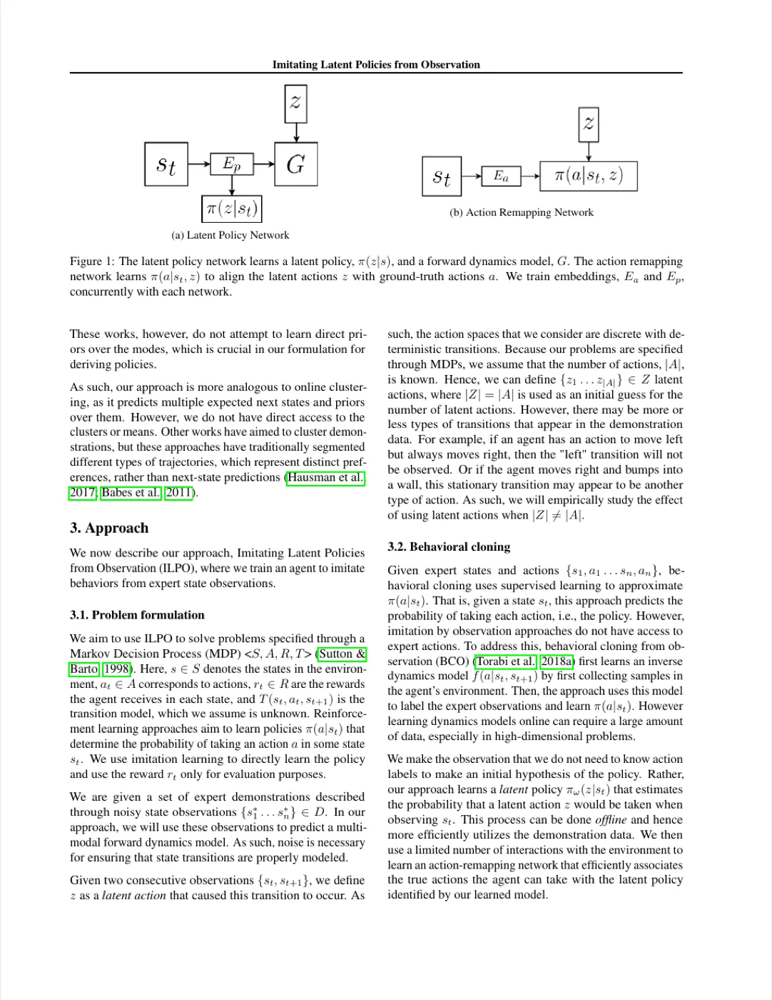
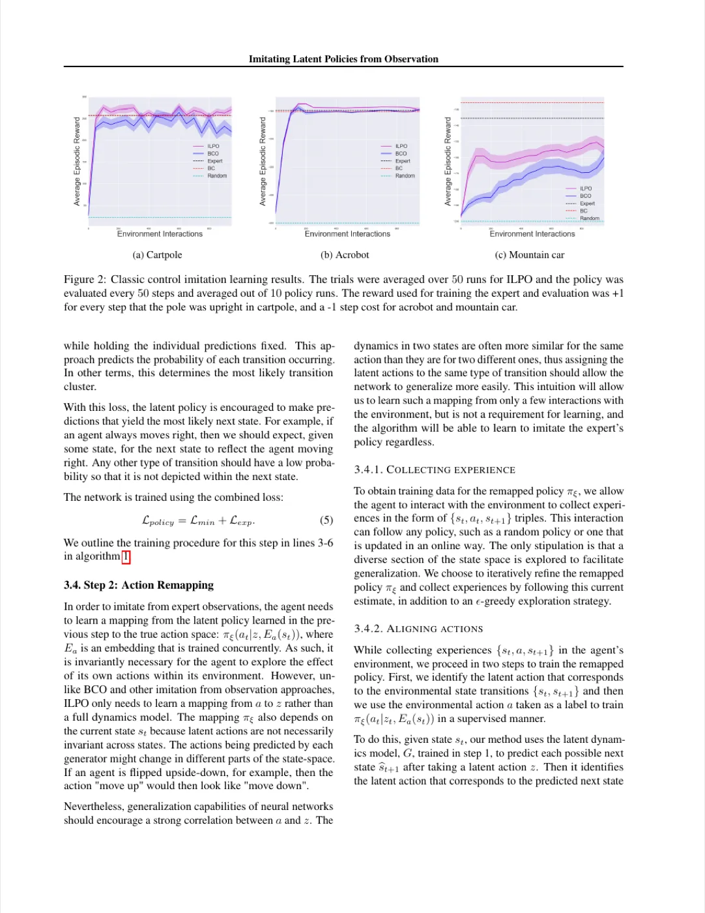
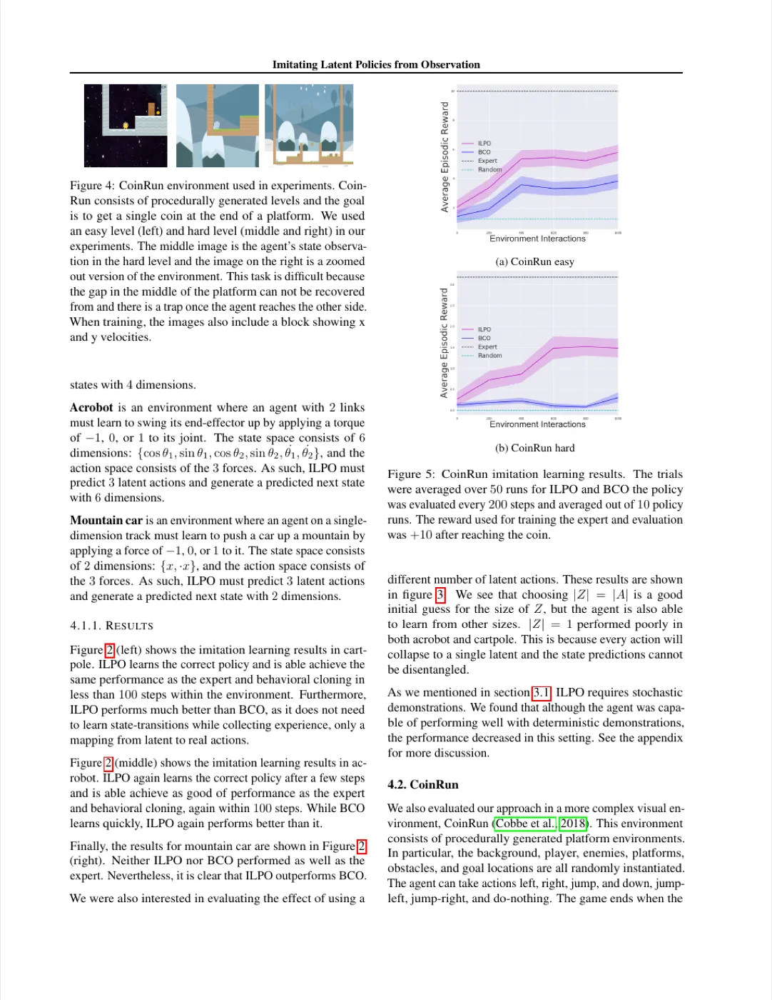
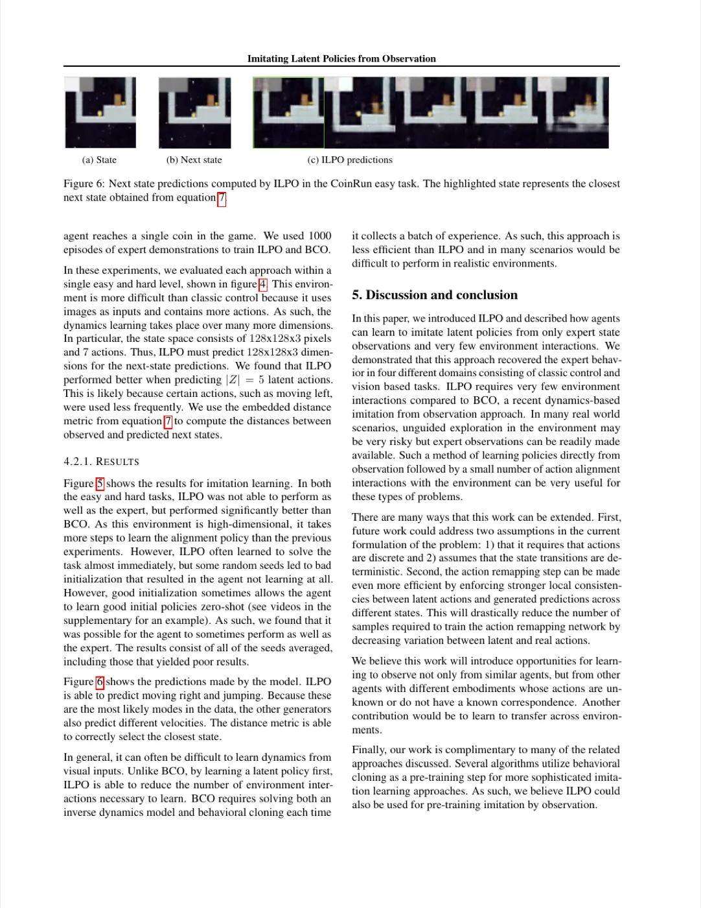

ILPO（Imitating Latent Policies from Observation）提出了一种两阶段模仿学习框架： 先从专家状态观测中离线学习 latent policy 和 forward dynamics model， 再通过极少量环境交互将潜在动作对齐到真实动作空间， 从而在无需任何专家动作标签的前提下完成行为模仿。
传统模仿学习需要同时获取专家的状态观测与动作标注，这在现实场景中往往难以满足—— 视频、人类示范或跨体型代理的行为记录通常只包含状态序列而没有对应动作。 现有"仅从观测模仿"方法（如 BCO）虽不依赖专家动作， 但需要先在环境中进行大量采样来学习逆向动力学模型， 在危险或高成本的真实场景中代价极高。
"We describe a novel approach to imitation learning that infers latent policies directly from state observations … we only need a mechanism for learning policies from observation alone without requiring access to expert actions and with only a few interactions within the environment."
作者的核心洞察是：即便不知道真实动作标签，状态转移之间仍存在可预测的潜在因（latent causes）—— 这些因可以用离散的 latent actions 描述。先离线从专家数据中学习这些 latent actions 和对应的动力学模型， 然后只用极少量真实环境交互，将 latent actions 映射到真实动作空间。 这就像先观察朋友打游戏，再亲自上手几步确认手柄按键对应关系。
ILPO 分为两个阶段：Step 1 离线学习 latent policy 和 forward dynamics model； Step 2 用少量真实环境交互学习 action remapping network，将 latent actions 对齐到真实动作。 推理时，先选最可能的 latent action，再映射到对应的真实动作。

给定专家状态序列 {st, st+1}，ILPO 联合训练两个目标：
Lmin = minz ‖Δt − Gθ(Ep(st), z)‖₂。
这使每个生成器收敛到一类转移簇（transition cluster），而非预测所有转移的均值。
ŝt+1 = Σz πω(z|st) Gθ(Ep(st), z)，
损失 Lexp = ‖st+1 − ŝt+1‖₂。
总损失 Lpolicy = Lmin + Lexp。
通过 ε-greedy 策略在真实环境中采集少量 {st, at, st+1} 三元组。 利用已训练好的 G，找到与观测转移最接近的 latent action：
zt = argminz ‖st+1 − Gθ(Ep(st), z)‖₂
zt = argminz ‖Ep(st+1) − Ep(Gθ(Ep(st), z))‖₂（在 embedding 空间度量距离）
得到 zt 后，以真实动作 at 为标签，通过 cross-entropy loss 监督训练 action remapping network πξ(at|zt, Ea(st))。 由于神经网络的泛化能力，相同动作在不同状态下通常产生相似的状态转移， 因此只需少量交互就能学会可泛化的 latent-to-real 映射。
给定状态 st：先选最可能的 latent action
z* = argmaxz πω(z|st)，
再选最可能对应该 latent action 的真实动作
a* = argmaxa πξ(a|z*, st)。
整个推理过程无需额外环境交互。
在 4 个环境中评估 ILPO：经典控制任务（Cartpole、Acrobot、Mountain car）和 视觉平台游戏 CoinRun（OpenAI）。 基线方法：专家策略（Expert）、随机策略（Random）、 Behavioral Cloning（BC，使用真实动作标签）、 BCO（Behavioral Cloning from Observation，不使用专家动作但需要大量环境采样）。 实验均使用 OpenAI Baselines 生成专家策略。



论文测试了 |Z| ≠ |A| 的情形（图 3）： 以 |Z| = |A| 为初始猜测效果最好，但智能体在其他大小下仍能学习。 |Z| = 1 在 Cartpole 和 Acrobot 中表现很差，因为所有动作会坍缩到同一个 latent， 状态预测无法解耦。这验证了"latent action 数量 = 真实动作数量"是合理的先验假设。
| 环境 | BCO（基线） | ILPO（本文） | BC（有动作标签） | Expert |
|---|---|---|---|---|
| Cartpole（步数 ≤100） | 低于 Expert | ≈ Expert | ≈ Expert | — |
| Acrobot（步数 ≤100） | 低于 Expert | ≈ Expert | ≈ Expert | — |
| Mountain car | 低于 Expert | 优于 BCO | ≈ Expert | — |
| CoinRun Easy / Hard | 低于 Expert | 显著优于 BCO | — | — |
注：上表为对论文图表的定性归纳，具体数值请参见原文图 2、图 5。 BC 使用真实动作标签，ILPO 和 BCO 均不使用专家动作。
"future work could address … that it requires that actions are discrete"。 当前 ILPO 假设动作空间为离散集合，连续控制（如机械臂扭矩控制）无法直接应用。 此外，方法还假设状态转移是确定性的（deterministic transitions）。
虽然比 BCO 需要少得多的交互，但 ILPO 第二步仍需在真实环境中采集 {s, a, s'} 样本进行 action remapping。 在完全无法与环境交互的场景（如医疗机器人冷启动）依然面临挑战。 论文也指出可通过"enforcing stronger local consistencies between latent actions and generated predictions"进一步减少所需样本。
CoinRun 实验中，"some random seeds led to bad initialization that resulted in the agent not learning at all"。 高维情形（128×128×3）下动力学学习难度更大，整体结果包含了表现很差的 seed。
方法需要预先指定 |Z|（通常设为 |A|）。消融实验表明 |Z| ≠ |A| 仍可学习， 但在实际应用中真实动作数量未必已知， 自动确定合适的 latent action 数量是未来工作方向之一。
"ILPO requires stochastic demonstrations … although the agent was capable of performing well with deterministic demonstrations, the performance decreased in this setting"。 如果专家演示过于确定性，某些 latent action 对应的转移可能从未在数据中出现，影响动力学模型的覆盖度。